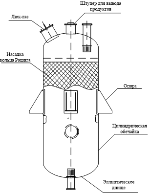

3/10
Насадочная ректификационная колонна

Ректификационная колонна насадочного типа представляет собой аппарат для проведения массообменных процессов, состоящий из цилиндрической обечайки, заполненной насадочными контактными элементами, опор, днищ, штуцеров и люков-лазов.